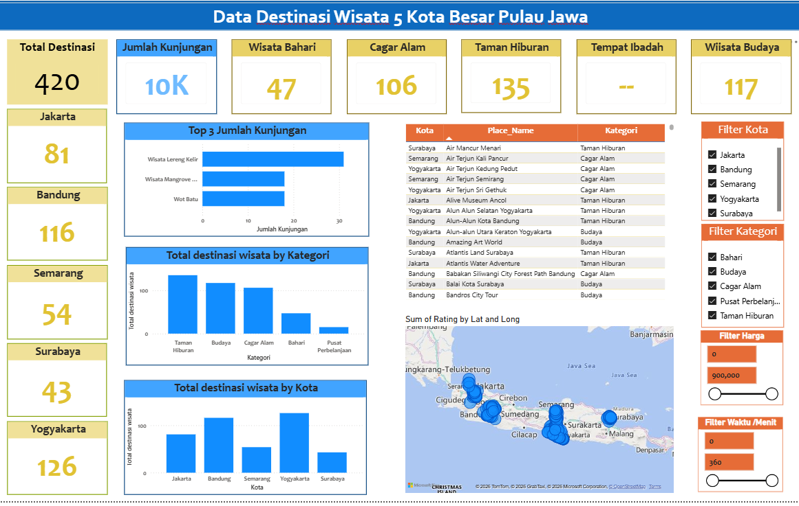

Tourism Destinations
Major Cities
Total Visitors
Tourism plays an important role in supporting regional economic growth. However, raw tourism datasets often contain missing values, duplicate records, inconsistent categories, and statistical outliers that reduce data quality and affect analytical accuracy. Without proper preprocessing, these issues can produce misleading insights and limit the effectiveness of business reporting.
This project was developed to transform raw tourism destination data from five major cities on Java Island into an interactive Business Intelligence dashboard using Microsoft Power BI. The dashboard provides a comprehensive overview of tourism destinations, visitor statistics, destination categories, and geographical distributions through intuitive and interactive visualizations.
The objective of this project was to develop an end-to-end Business Intelligence solution capable of transforming raw tourism data into meaningful insights. My responsibilities included cleaning and validating the dataset, handling missing values, detecting and removing outliers, ensuring data consistency, creating analytical measures, and designing an interactive dashboard that supports data-driven decision-making.
The project followed a complete data analytics workflow, beginning with raw data preprocessing and ending with interactive dashboard visualization using Microsoft Power BI.
The project successfully transformed raw tourism data into a clean, structured, and interactive Business Intelligence dashboard that supports tourism analysis and data-driven decision-making.
This project demonstrates practical experience across the complete Business Intelligence workflow, including data cleaning, preprocessing, data validation, outlier detection, DAX calculations, and interactive dashboard development. The final dashboard enables stakeholders to explore tourism information efficiently and supports faster, data-driven decision-making.